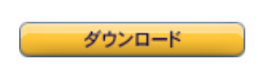

(Guide written by ShobuBlaze)
NOTE: These methods are for subscribing for the PC/Switch/Wii U versions using a browser only! Subscriptions are also possible through the Nintendo eShop. The PS4, browser, and 3DS versions use a completely separate type of subscription. Subscribing through the methods below (or through the eShop) is a shared subscription between the PC, Switch, and Wii U. The PS4, browser, and 3DS versions are not included in this subscription. In addition, this will tell you how to purchase the game digitally for the PC.
Also, you cannot subscribe until you purchase the full version of the game!!
There are two major ways you can subscribe to the game outside of Japan. The first is using Amazon Pay. You'll need to create a Japanese Amazon account, but you can use a non-Japanese debit/credit card. Amazon Pay doesn't upcharge a conversion fee, so this is the optimal choice if you can get it working successfully.
THIS IS THE RECOMMENDED METHOD. AMAZON JP DOES NOT UPCHARGE YOU!
The second is getting yourself a WebMoney card, which is essentially a prepaid card used for many kinds of online games in Japan. There are various ways to do this, but the cheapest option I know of is using this site: https://www.seagm.com/japan-webmoney-prepaid-card
So, if you're successful there, you can use that card. You won't need an Amazon JP account with this method. Skip below to the "Buying Crysta" section if you have a WebMoney card ready.
ONLY USE THIS METHOD IF YOU CANNOT GET THE AMAZON PAY METHOD TO WORK!
If you're looking to purchase the game, follow the Amazon Japan Account Setup first. If you already have an Amazon Japan Account set up, you can skip right down to the Purchasing Guide.
Setting Up Amazon Japan Account
The first thing we'll need to do if we plan on using Amazon either for AmazonPay or for purchasing the full game is to make a Japanese Amazon account. This will have to be a new account separate from your regular Amazon account if you have one already.
Go to Amazon JP and create an account.
After creating, log in and if you want to change the site to English, click the Japan flag and you can set it there by selecting EN.
Go to "Your Account".
Click "Content and Devices".

Click the "Preferences" tab.
Click Country/Region settings and then "Change".

In the “Country of residence” window,
enter a valid Japanese address here. You’ll have to
look up a Japanese address, ZIP code, and enter the correct
prefecture.
It can be anything so long as it is valid.
NOTE: This is the point of the guide that trips the most people up
and usually causes the most issues with ordering. If you're having trouble finding an
address on something like Google Maps, I HIGHLY recommend signing up for a service
like Tenso and register for an
account. Once you do, you'll be given your own shipping address used
for online purchases, which can also be used here. See below for an
example:
The City/Town/Village and Town/Village name portion together
counts as a single address, so use that when it asks for it.
Go to Your Account > Your Addresses.
You’ll need to create two addresses, one VALID Japanese address (It can be different than the one in the previous step or the same. If you are using your Tenso address, go to this page and scroll down to the "Amazon JP" section. It will show you how to correctly fill in the address fields.) and your billing address for your debit/credit card.
MAKE SURE TO MAKE THE JAPANESE ADDRESS THE DEFAULT ADDRESS!
Add your card by going to Account > Payments > Wallet.
Make sure to select YOUR billing address as the card’s billing address.
You’re done! This was the hardest step of the guide.
Purchasing the Game (PC Digital Version)
This guide will also explain how to purchase the game using Amazon JP. Since you’ve already set up an Amazon JP account, it’ll be easy.
Log into your account on Amazon JP.
Head to the DQX All in One Package page, which is located here.
Add it to your cart, and purchase it. It might take a while for the order to process and go through, so check your “My Orders” page.
NOTE: There may be several reasons why this doesn’t work. One is
that the Japanese address you entered is wrong in your address book
or the address under Country/Region settings isn't correctly set to
Japan. Another common issue is that your bank sees this unknown
foreign charge, and blocks it because they think it is fraudulent.
Contact your bank and let them know that this is a legitimate
charge, and try it again.
If you've tried all these steps and are still having trouble purchasing,
you have a few more options. One is to buy a prepaid Amazon JP gift
card from a site like Play Asia or seagm and use the funds to purchase
the game. Another method is adding funds directly via Amazon through
this page.
Some people have reported that their card doesn't work with purchasing the
game directly, but adding funds does work.
Once the order goes through, go to “My Account”, and then “Games & software” under “Digital Content and Devices”.

You’ll see the game and also see the registration code. Note this down.

Log into your account at the Square Enix Account Management page, and click the DQX logo at the top.
You will automatically be brought to the registration code page. Enter your code into the boxes and then click OK. You're all set!
Lastly, you'll need to download the additional game data necessary for full accounts. You can do this buy clicking the yellow "Download"
button located next to the registration code on Amazon, shown below. Alternatively, you can download
them from here.

Once downloaded, make sure to EXTRACT the files to an easily accessible
location, like your desktop or Documents folder. Once extracted, run the
Setup.exe file inside the extracted folder. The setup relies
on this folder structure, so do not move any of the folders or files inside.
 Once you see the setup, click the blue button highlighted in red from the
image above. The install process will automatically install each version,
so just follow the prompts on screen. You will know all versions are installed
when you return to the setup above and "OK" is next to each version. You can now
close the setup. Congrats, you now own the full game!
Once you see the setup, click the blue button highlighted in red from the
image above. The install process will automatically install each version,
so just follow the prompts on screen. You will know all versions are installed
when you return to the setup above and "OK" is next to each version. You can now
close the setup. Congrats, you now own the full game!
Setting Up Square Enix Account Address
After purchasing and registering the game, you'll be given 20 free days of play time. After that, you'll need to set up a subscription. Before you can do that, you need to register an address on your Square Enix account.
Log into your Square Enix account here. You'll see the screen below.

Hover over the second option at the top that says お支払い・明細, and select the fourth option in the drop down menu.
The next screen will have you enter in your address. It looks daunting, but it's simpler than it looks.
The only fields you need to manually fill yourself are the "Gender", "Full Name", "Name Furigana", and "Postal Code".
For the “Full Name” and “Name Furigana” sections, it’s best to use a katakana name for both. You can look those up easily online, or just Google translate. For example, if your name is “Smith, John” you’d use スミス and ジョン for the first and second name boxes, respectively. (Feel free to use this John Smith example if you'd like, it doesn't actually care so long as the name itself is valid.)
Next, enter a valid Japanese zip code in the box (for example, 100-0004) and press the yellow "General address from postal code" button next to it. (You may use this example too, if you wish.) The Prefecture, City, and Town boxes will auto fill. Afterwards, click the orange “Next” button at the bottom to complete address registration.
The next screen will show a confirmation of your address settings. Press the orange button once again to finish.
Setting up a Subscription (AmazonPay)
Log into your account at the Astoltia Immigration Bureau page here.

On this next screen, click the gray rectangle that has “Amazon Pay” in it.
On the following screen, click the "Amazon Pay" button. You’ll be taken to Amazon briefly to confirm your payment method. Press the yellow button at the bottom of the screen to confirm.
Choose the length of time you’d like to subscribe for, and hit OK.
You’ll be taken to the confirmation page. Click the button circled in red.
Congratulations! You’re subscribed!
Buying Crysta (No AmazonPay)
Crysta is a currency you can purchase on Square Enix to use for subscriptions and buying in the cash shop.
Log into your account at the Square Enix Account Management page here.

Select “Crysta charge” from this menu.
The next screen will allow you to charge Crysta.
If you have your WebMoney card ready, enter it at the bottom and click “Next”.
Success! You now have Crysta to spend.
Setting up a Subscription (Crysta)
Log into your account at the Astoltia Immigration Bureau page here.

Click the button circled in red.
Select the "Pay with Crysta" option.
Select the length of time you'd like to subscribe for, then click "OK".
On the next screen, it will ask to confirm. Hit the right button, and you should be good to go.
Success! You're subscribed.
NOTE: By default, the game is set to do an automatic Crysta renewal at each time interval you chose above. If you’d like to cancel this auto renewal, you can click that red button in the image above again, and then select this option.

If you’d like to re-enable automatic continuation, you can go through the steps above to re-enable it while you still have an active subscription remaining.